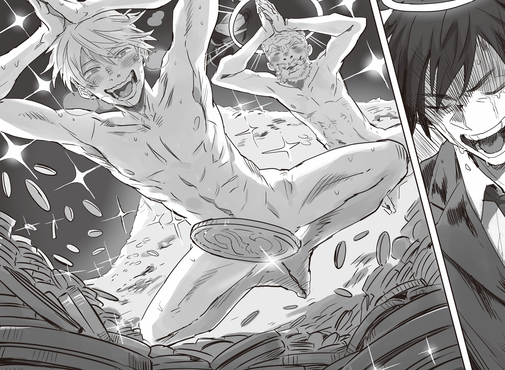

Chapter 1 – Crusade Proclamation
.
Part 1
The report that Trystovy Dukedom was destroyed was immediately brought by the spies to the pope office that was located in Solvidivian, the headquarters of Europa Church.
The extremely fast invasion speed of the reborn Trystovy Kingdom army under the leadership of Baldr and the pathetic state of the dukedom that was unable to obtain any result at all even after using the precious holy relics made the church’s top brass to grit their teeth.
「Just what were you fool doing!?」
The bishop who was dispatched to the dukedom, Lochside Bergerschoen was shrinking so small that it looked like he would disappear against the blame toward him. He was trickling out cold sweat.
He was the one given the responsibility to manage the holy relic that was able to oppose Baldr who was a possessor of King’s Gate. And yet he entrusted the thing to the dukedom’s prime minister Valerie, someone unrelated with the church. The responsibility for that was heavy.
「I have no intention to make excuse. However, I judged that it was impossible to directly confront that beastman crown prince other than Valerie.」
Lochside was only given the holy relic and twenty soldiers for the mission. To approach Baldr who was being protected by an army of tens of thousands was a dream within a dream.
That was why Lochside got persuaded successfully by Valerie.
There wasn’t any good chance to approach Baldr except for a few people after they were disarmed. Valerie told him to give him the holy relic because he would use it to take down Baldr at the cost of his life.
Valerie was completely telling the truth, and in case Lochside refused him, he wouldn’t hesitate to use force. Faced with that, Lochside didn’t have the strength to oppose him.
Archbishop Gahalad who belonged to the hardliners faction against Baldr hit the table and roared angrily.
「Only the result matter. You who lost the holy relic and failed in erasing the god’s enemy deserve execution!」
「Of course, I don’t have the slightest intention to avoid responsibility.」
Lochside himself was the one who knew that best.
The precious holy relic was lost because of his incompetence. It would make it very difficult for the church to lend the holy relics to other country from here on because they also had to consider the church’s protection.
There was no doubt that this would also affect their diplomatic relationship with Answerer Kingdom.
「……Although it’s natural to charge Lochside’s failure, the real problem here is how we were completely unable to predict that the dukedom would be destroyed this quickly. We also had the option of quickly withdrawing to preserve the holy relics if only we knew that the dukedom had no chance of victory.」
A wall──a powerful enemy that couldn’t be overcome with only faith naturally existed.
Shouldn’t the church preserve the holy relic and their combat force the moment Baldr’s assassination became impossible? Archbishop Barrichello who was in charge of the financial affairs asked such question.
「Don’t be stupid! It was impossible for us to just sit quietly waiting for the dukedom’s destruction!」
Archbishop Mazella who was in charge of foreign affairs protested.
The church also had their standing to consider. They couldn’t possibly abandon a country just because it looked like they would lose.
If they were going to do something like that then they shouldn’t give any assistance from the start. Europa Church wasn’t a simple despotism country, but a religious organization. They needed to be obsessed with their moral pretext even more than a nation.
「You were the one who said that only the result matter just now. The reality is that we are now in the position of getting threatened by Trystovy Kingdom!」
「M-muu……」
This was a situation that was without precedent even within the long history of the church.
The fact that Baldr was proclaiming the church as an enemy was just that heavy.
The church maintained a vast amount of influence as the biggest religious organization in the continent until now. They had never been in a clear hostile relation against a country. It was the same even against Nordland Empire and Gartlake Kingdom that were giving better treatment to the beastman race.
And yet, now they got into a hostile relationship with Trystovy Kingdom of all countries. It was a country that was directly adjacent to the pope territory.
Perhaps it was only natural because they had tried to assassinate the kingdom’s ruler Baldr many times, but at this rate the possibility that Trystovy Kingdom would attack and annihilate them wasn’t low.
「──We shall proclaim the crusade.」
The pope spoke those words with a quiet determination. All the archbishops held their breath.
The crusade had never been invoked even once since the church became an organization.
It was the church’s last resort. Once that card was played, there would be no taking it back anymore.
In short the crusade proclamation was telling the church’s believer that they should obey the religion more than the king. Depending on the situation they should even bring down the king. It was a proclamation that was denying the authority of absolute monarch.
However even the followers of Europa Church were just human. They had their own daily life.
Very few people would go as far as throwing away their own life for the sake of their religion. Or rather, if someone had such heavy faith, then normally they would already walk the path of clergyman from the start.
It could be said that it was unknown how far the commoners would act for the church’s sake in the end.
In addition there was a very big problem.
A problem that the possibility the commoners of Trystovy Kingdom obeying the church’s instruction was nonexistent.
For them Baldr was a savior who liberated them from the civil war and the tyranny of the nobles that had continued for so long. They would never agree to return back to a painful battle once more at this point.
If the church’s clergyman provoked them to rebel against the kingdom, they would immediately get severely criticized and tied up.
The church’s top brass couldn’t possibly know but, this too was within Valerie’s plan from the start.
「……There is also the option of asking Answerer Kingdom for assistance though……」
The oldest archbishop Rowanor hesitantly asked the pope.
「Other countries won’t just stay quiet in that case. Now that the dukedom is destroyed, it’s highly possible that Mauricia Kingdom and Hauleria Kingdom will side with Trystovy.」
Sanjuan Kingdom and Majorca Kingdom were already the comrade in arms of the reborn Trystovy.
Although Mauricia Kingdom didn’t put their full effort in giving assistance, Marquis Randolph’s army was participating in the war, so it went without saying who that country would side with.
If they combined their strength, then they would surpass even the national strength of the strongest country in the continent Answerer Kingdom.
If that happened, then it would become practically impossible to destroy the reborn Trystovy Kingdom.
──That was the only thing that couldn’t be allowed.
Even if the church was destroyed, Baldr who descended from the lineage of beastman race reforming the world as king was the only thing that had to be avoided. There was a reason why it had to be avoided.
(Good grief, like this I won’t be able to taste prosperity even though I have finally become the pope after much struggle.)
Even though he was finally able to grasp the seat of pope at the end of a rigorous political struggle, this kind of disaster suddenly occurred in his generation. He really had no luck at all.
Although he was having such thinking, he had no intention to run away from reality.
After all the pope had continued to exist for many generations exactly for this kind of situation.
「The countries will be shaken with the proclamation of crusade. We will buy time with that, cooperate with Answerer Kingdom, and destroy them. Tell Answerer Kingdom that we will also grant them with the position as the defender of the faith.」
「T-that’s──is that really alright?」
Granting the position of the defender of the faith meant that the church would recognize Answerer Kingdom as the successor of the unification dynasty that designated Europa religion as the national religion.
If they did something like that, they might turn all other nations into their enemy.
「The country that destroy Trystovy will grasp the hegemony of this continent. Will Answerer Kingdom unify the continent once more, or will an alliance of governments with Trystovy at the center grasp the hegemony. There is no need to say which way lie the path of survival for our religion.」
The dice had been thrown. There was no option of reconciling with the reborn Trystovy Kingdom at this point, so the only path remaining for the church was to place their bet on Answerer Kingdom. That was what the pope was saying.
Of course they would need to pressure Mauricia Kingdom and Haurelia Kingdom to fluster them politically.
「Select the people with deep faithfulness toward the church. After all the mass production and supply of holy relics are the only things that we can’t possibly hand over to the other countries.」
If they only focused on efficiency, they should hand over the knowledge of the holy relics to Answerer Kingdom.
But that would affect the meaning of the church’s existence. The holy relics were something that the church had to control and supervise to the bitter end.
In that sense, they would also have to consider Answerer Kingdom as another threat and enacted a difficult negotiation with them.
(Really, I shouldn’t become the pope.)
As expected Archbishop Rowanor who didn’t choose the path of becoming the pope was a wise man. After all if it wasn’t him, but Rowanor who succeeded the position of pope in his old age, then his little remaining lifespan would surely get consumed till the last drop.
The pope hardened his unwavering determination even while letting out a really deep sigh.
.
Part 2
Trystovy Dukedom’s archduke Jack was lying down on a bed while staring at the morning sun shining in from the window. *Kin*, the shrill buzzing in the ears was making him holding his head with both hands.
This day had finally arrived.
The bed and furniture inside the room were luxurious as befitting his status as an archduke, but in the end it was nothing more than a confinement room inside the palace.
He was left alive until this day for the sake of getting publicly executed to bear the whole responsibility of the civil war.
His loyal retainers Olten and Marquis Spinoza Fiorentina were already gone.
It was completely impossible to expect the nobles who remained inside the country had the guts to rescue Jack. Rather there was no doubt those nobles were proactively trying to harm Jack to pander to Baldr.
(At that time Valerie definitely said, just as planned.)
Jack’s memory at that time was spotty because he was shaking fiercely from terror, but he clearly remembered Valerie’s words when capturing him.
However, Valerie displayed a savage valor in order to kill Baldr. He failed and his life was scattered.
Jack still hadn’t noticed that Valerie had been scheming behind the scene all this time since the dukedom was founded in order to hand over Trystovy to a hero(Baldr).
Because such idea was completely outside his scope of understanding.
What was confusing for Jack was why did Valerie betray him? And then why after doing such betrayal Valerie went against Baldr and got killed?
「──Your highness, here is your change of clothes.」
「Hiihh!」
Jack screamed pathetically and froze when a military chamberlain opened the door with a grim look.
He was resolving himself, but if possible he wanted to run away from this reality.
「Please rest assured. We won’t allow your majesty the archduke to look unsightly.」
What part of that should make me not worry. In short all of that is to kill me isn’t it!!
Jack’s teeth were clattering. He was backing away while making noise incoherently.
Once he thought that he better off dead rather than allowing his country to be taken over by Baldr, but that was a lie.
He didn’t want to die.
He would give away the dukedom and anything, so he wanted to be spared.
「──Please show us a resolve that won’t put any shame over the title of the archduke.」
It took around one hour to forcefully put the ceremonial dress on Jack and also putting his hair in order with oil. With that he regained his appearance as the ruler of the dukedom in the past.
Though in the end it was only in appearance. After all he was going to head to the execution site after this.
Oh god. I beg you please safe this loyal servant of yours. I swear that I’ll exterminate those beastmen by a thousand times more if you save me ──.
Although he was praying like that, he actually wasn’t showing any resistance and got on the horse carriage just as the military chamberlain pressed him to.
He knew best that his body that had gone past seventy years old couldn’t oppose a brawny soldier.
It was impossible there was anything that could save Jack from his current predicament except divine aid.
「It’s the archduke! The archduke is coming!」
「How dare you murdered my family! I’m gonna watch his dying face!」
「Aa, finally peace will also come to this country……」
Are those my people?
Jack shuddered from listening to the voice of the people directly with his ears.
They weren’t saying those words because they wanted to butter up their new king Baldr.
It was clear that they were voluntarily harboring hostility for Jack and the nobles.
「──Why?」
Being governed by the elites, the nobles was what could guarantee the commoners’ safety above all else.
The nation would turn chaotic if the commoners were free to do as they pleased. The land and fortunes of the weak commoners would swiftly get snatched away.
It was none other than the order brought about by nobles that could maintain the country to keep functioning.
Jack couldn’t understand the reason why the commoners were cursing so hatefully at him like this.
「──We have arrived. Please come out your majesty.」
The execution site was a three hundred meter square area that was surrounded by fences and a crucifixion stage at the center of it. The site was protected by 300 carefully selected knights.
Jack didn’t know whether that number was a lot or few.
However the fact that the number of commoners who came to watch the execution easily surpassed tens of thousands of people shocked him terribly.
The crowd’s density made him wondered if the majority of the population of Millianna was gathered here in this execution site.
── Do they really hate me that much?
There was no way he could successfully protect the dukedom if his people were like this.
Jack felt despair at how unreasonable this situation was and closed his eyes.
It was then.
「Justice for the slaughter of Continerri’s people!」
Someone yelled that. Perhaps that person had relatives in Continerri.
However the voice that was only raised by one person was gradually became a large wave that was spreading among the people.
「My mother was killed in the slaughter!」
「My home was burned when the city was set on fire the other day!」
「How dare you sucked and grew fat from our blood! You damn parasite!」
Jack was showered with the screams of resentment and dissatisfaction from the commoners. He suddenly obtained the answer that he didn’t understand until just now.
He realized that Valerie’s objective was none other than making this scenery.
「FUHAHAHAHAHAHAHAHAHAHAHAHA!」
It felt very funny for some reason.
He thought that he had been completely outwitted. He also thought of how foolish he had been.
Jack continued to laugh loudly even while his arms and legs were restrained on the execution stage.
Perhaps this was the first time he felt this amused since he rebelled against his brother and established the dukedom.
「So anything and everything was on the palm of your hand! However human’s motive cannot control everything!」
As a human there would be miscalculation, and sometimes the heaven would betray human cruelly.
There was no way Valerie who wasn’t even a god didn’t follow that same rule.
Jack held his head high without feeling any shame toward the cursing shouts that were roaring at him.
「Aa, splendid, splendid! Who can possibly imagine something like this? But you have forgotten Valerie. The man who you chose is someone with the blood of beastman in his body, but he also has the blood of Trystovy royal family in him. Our bloodline shall continue for eternity!」
Was there any guarantee that Baldr would continue to be a wise ruler until his death?
Human’s ideal was fleeting.
Jack who built the dukedom in the past while burning in new ideal was someone who understood that better than anyone.
「You can feel proud for this brief glory. But in the end even the scheme that you bet your whole life for will also fall apart in vain.」
Two knights readied their spear.
Jack continued to laugh in amusement until that moment he was stabbed from his armpits.
.
Part 3
Around the time that the church was finally going to declare a crusade, Baldr was visiting Marquis Ost’s territory together with Augusto and Silk.
Augusto muttered inside the horse carriage that was heading to the mansion.
「……Well, there is no way that man doesn’t leave anything behind.」
Of course Marquis Valerie Ost’s territory and assets had been confiscated as a traitor. Because Augusto wasn’t recognized as his biological son in public, the territory and fortunes were put under the direct control of the royal family.
If Augusto wished for it then Baldr wouldn’t mind giving them to him as the reward for his achievements in the civil war, but Augusto firmly refused it.
「They are unnecessary for me.」
His memory of being embraced by his mother Idunn while his father Valerie, or rather Garibaldi were rowing a boat toward the sea happened in Mulberry, not here.
Even then Augusto thought that it would be problematic to entrust the management of the territory to another people.
The information of the intelligence agency under Valerie’s control and the darkness of the dukedom that was kept under wrap must never be spread to the public.
This was that Valerie they were talking about. Who knew how many secrets he was keeping in hiding. Perhaps there were even secrets that could overturn a country among them.
Baldr was also feeling apprehension about that. That was why he visited this place with Augusto even though right now was a very busy period for them.
「……Both Baldr and Augusto are really holding the prime minister(Valerie) in high regard huh.」
Silk who was sensing the men’s extraordinary seriousness was blinking in surprise.
Seen from the side, Valerie looked like a fool who couldn’t do anything particularly effective as the prime minister to stop the dukedom from heading to destruction.
Actually Silk was still half in disbelief even after Baldr told her the truth.
For her Valerie was a hateful enemy who destroyed the homeland of her mother. He even still tried to target Baldr’s life until the last moment of his life. No matter how she looked at him, he was a loyal vassal of the dukedom.
Even if she was told that person actually manipulated this dukedom from behind the scene and completely controlled this civil war to follow his script, it still didn’t really hit home to her.
Conversely speaking, that was just how outrageous the thing that Valerie achieved.
If Baldr or Augusto was told to do the same thing, they would instantly judge that it was impossible for them.
「To be honest I think it’s still not enough no matter how highly I think of that person.」
Baldr muttered that with a heartfelt tone.
In the end if Valerie was really his enemy, would he still drew breath even now like this? It sent a chill to his spine just from thinking about it.
When they arrived at the destination, they saw that Ost House’s residence felt relatively small to be the house of the one manipulating the dukedom behind the scene.
However it was luxurious enough as a mansion of a noble. The garden and the detached building for Idunn to live in were also not lacking anything.
The entrance had a gentle atmosphere and splendid appearance from proper care. It showed the height of quality and loyalty of the servants who were working for Valerie.
「──This is the royal visit of his majesty. Greet him reverently.」
Gitze who was unable to stop Baldr from getting seriously injured at the battle in Continerri and also unable to obtain any outstanding achievements in the capture of Millianna forcefully volunteered himself to be Baldr’s bodyguard.
He wouldn’t be able to keep calm unless he did that.
The wound in his heart after his little sister Idunn followed after Valerie to that world was also greatly influencing his mental state right now.
The door of the main entrance of Ost residence was opening in reaction to Gitze’s voice.
「──This humble servant has been waiting, your majesty.」
After Caulila’s death, the one who succeeded the position of Ost House’s butler was Bruich who was now welcoming them.
His demeanor and refined etiquette wasn’t at all inferior compared to Caulila.
Baldr was lightly astonished. He wondered just how blessed Valerie was with capable people.
「My late master had left behind instruction to bequeath everything in the possession of Ost House to your majesty without sparing anything.」
「So he was also fully prepared with this. As expected.」
Baldr nodded. Beside him Silk was also revealing her surprise.
That was because she realized that Valerie had anticipated that this day would arrive since a long time ago before he died.
Finally Silk’s perception toward Valerie was starting to change inside her heart.
「This one here is the one in charge of supervising the intelligence agency.」
Bluich said that to introduce a huge man in the prime of his life. The man’s defining characteristic was his thick eyebrows.
「My name is Talisca. Please allow this one to enter under Augusto-sama’s command from here on.」
「Eeh? Why me-!?」
「Because the intelligence agency isn’t under the supervision of Ost House, but an unofficial division of Garibaldi Company. The fund we received also came from the company.」
「That shitty dad! Since when he did that!」
Even Augusto wasn’t aware of that despite having succeeding the position as Garibaldi Company’s president.
That damn father, he selfishly pushed a ton of work at him, and yet he was keeping something like this a secret from him until this day──.
It felt like he had been dancing on the palm of his father’s hand all this time. Augusto’s face went red in indignation.
「……Good grief, that man continue to surprise us until the very end.」
Baldr also could do nothing except smiling wryly at this.
Thinking carefully, Valerie was a major merchant who served as one of the Seven Elders. He possesesd more than enough routes to send his intelligence agents and the funds.
Perhaps it wasn’t impossible for him to surpas Baldr’s intelligence agency locally.
「A team of our organization, the special division of Garibaldi Company accompanied the dukedom’s battle against your majesty this time. We lost about a third of our battle strength from that, but I believe that our organization still has enough capability to be of use for your majesty.」
「You don’t have any reluctance cooperating with me who was your enemy?」
「I never thought of the kingdom as enemy even once. Though they are a formidable obstacle for us to accomplish our mission.」
「……I’ll consider that a praise.」
They too were sharing Valerie’s ideal.
They carried out the dirty works in the shadow for the sake of Trystovy’s future while continuously waiting for the hero’s return.
They didn’t have any scruple at all to cooperate with Baldr.
「We are currently in the middle of infiltrating the church and Nedras Kingdom. I swear that we will definitely be useful.」
「You have reached that far……!」
Baldr’s next enemy was Europa Church that had made their stance clear. Also in order to separate them from their protector Answerer Kingdom that was also a clear enemy of Baldr, the chaotic Nedras Kingdom would play an important role. Valerie had seen through that.
Baldr felt another chill at Valerie’s keen insight.
「Augusto, I’ll leave this matter to you. You should integrate them to the kingdom’s intelligence agency after this.」
「Of course it is. As I thought it become like this. You are planning to increase my workload again. I understand.」
Augusto’s shoulders slumped down in dejection.
Augusto’s position had become undeniably the prime minister since Millianna was occupied. Ramillies had also similarly taken the position of the great general. The two of them were extremely busy with works right now.
Augusto also held the post as the chairman of the maritime guild. He didn’t have any free time to play with his mistress Catherine or with Laura at all.
In fact his fiancée Angelica would move to Trystovy next month, so perhaps the days where Augusto could freely enjoy pleasure might never return again.
The way he looked made Baldr keenly felt his grief as a man, so even Baldr reflexively gave him a follow-up.
「Agatha will come soon from Antrim. After that the burden of the domestic affairs should be greatly reduced.」
At the same time when the civil war at Trystovy was concluded, the transfer of Antrim territory to the control of Prince William had also mostly finished.
Just the other day, Mauricia’s king Welkin had removed William’s status as a royalty and declared him as Duke Antrim.
It was the birth of a great noble who rivaled the ten great nobles.
From here on the power balance within Mauricia Kingdom would be changing greatly when Silk’s status as the queen of Trystovy in the future was also taken into consideration.
Antrim territory that could also be said as the legacy that Baldr left behind would be carrying the role of holding the ten great nobles in check as a great influence that was intimate with the royal family.
He had pushed a difficult role to his faraway friend William although it was accompanied with a big promotion.
Although it he recalled the ambition and guts of William when they met for the first time in the knight academy, then perhaps such role was just right for him.
「Aa, so Agatha-san will come soon! How great!」
Augusto’s face brightened.
If Agatha who was controlling the government of Antrim and her trusted bureaucrats came to Trystovy, then it would be alright to say that Augusto’s burden would be reduced by half.
With her shrewdness, then surely it would also be possible to reform the administrative organization of the reborn Trystovy Kingdom before long.
「──How about making her the prime minister too while we are at it? 」
「Agatha is my fiancée. There is no way she can become the prime minister right?」
「Your majesty has a lot of wives, so it doesn’t matter isn’t it!?」
「No, that reasoning is strange!」
Not everything could be permitted just because he was the king. The authority should be distributed to some degree. There was no way the post of prime minister that was the highest ranked post for retainer could be occupied by a wife of the king.
「Come to think of it, I heard that your majesty’s confidant is a man with loyalty that pierce the heaven and can do anything he set his mind to……」
「Tyros looks like he is really able to do anything but, he has no intention of doing anything else than being my butler so he is no good.」
「Then what’s going to happen with my free time-!?」
「There’s no other way except raising useful personnel to lighten your workload isn’t it?」
「I won’t have any hardship at all if something like that can be done so easily!」
In the current situation where they were completely unable to count on Trystovy nobles’ loyalty at all, they had to be careful in assigning people to the available posts.
At the current situation, Baldr was hesitating to allow any nobles to touch the national secret, even the nobles who had been friendly from the very beginning.
Baldr’s subordinates who had followed him ever since he was still Margrave Antrim was truly a precious force that was even more valuable than jewels.
Of course Augusto also had capable subordinates of his won, but there was no way he could so easily poach them away from Garibaldi Company because of their importance to the company. There were also some reasons why it was difficult to make them swear loyalty to the country.
It couldn’t be helped that Augusto was at his wits’ end when thinking of the numerous difficult problems that had to be resolved from here on.
「──I’m sorry. We can’t possibly allow too much intervention from Mauricia Kingdom.」
Silk pressed her hands together with an apologetic face.
Even if Silk was the daughter of Randolph House, recruiting people from Mauricia Kingdom to fill the important posts in the reborn Trystovy Kingdom would threaten the country’s security.
They also had to keep the intervention to the minimum in order to keep the diplomatic relations between both countries to be equal.
Augusto suddenly seemed to recall something and he lifted his face.
「……Bruich, the treatment for the vassals of House Ost still hasn’t been decided yet right?」
「Yes.」
「Then I’ll employ every single one of them. You should help me in my retainers selection from here on as my butler.」
「──As you wish.」
Thinking carefully, there was no way Valerie hadn’t predicted the current situation. And most of all, the subordinates of someone hard to please like him must be capable people, all of them.
The human resources that Augusto desperately needed was actually right before his eyes.
They were people who served that Valerie so they surely couldn’t be dealt with ordinary means, but they could be trusted far more than the nobles of the current Trystovy.
With this he would be able to have time for night adventure. Augusto smiled widely.
「The late master(Valerie) has left behind an order that I should hand over some things to your majesty.」
It seemed Bruich had half expected Augusto’s reaction. He looked like some burden had been taken down from his shoulders, and then he turned toward Baldr and bowed.
After he finished carrying out Valerie’s last will, he would stop being Ost House’s retainer and became Augusto’s retainer. Considering that, it was only natural for Bruich to feel deeply moved.
「──This way.」
Bruich was guiding Baldr and others to an underground vault that had a big size that didn’t match the size of the mansion above.
The rusty hinge was opened, and then several more contraptions were deactivated before the vault’s huge steel door was opening with dull metallic creaking sound.
「This is all the fortune that the late Valerie-sama has accumulated as Count Ost and as the president of Garibaldi Company for the sake of Trystovy’s future.」
「Wha-……」
「Unbelievable, this much……!」
Baldr and Augusto became similarly speechless.
Inside the dim vault, vast amount of gold coins that surpassed even the national budget of Trystovy Dukedom were piled up like a mountain.
Even Augusto who had ascended to the top of Trystovy’s maritime guild had never seen this many gold coins.
Though imperfect, Valerie was the one who ruled the darkness of a major nation like Trystovy Dukedom and used that influence to own a big company. His financial strength wasn’t average in any way.
This fund was exactly the reason he could control the underworld, possessed such excellent intelligence agency, and hired a lot of capable personnel.
「If he felt like it he should be able to destroy the dukedom and build his own country with this much money.」
「No, after all a country that is made with money isn’t the country that master’s late best friend(Viktor) dreamed of.」
Valerie was loyal to his ideal till the end.
The figure of the ideal country wouldn’t be visible just by taking over a country financially.
The heart of the people who were busy with their daily life wouldn’t change that easily. Extraordinarily cruel and merciless bloodshed, hatred, and tragedy were needed to be produced with irredeemable avarice in order to change the people’s heart.
「That was the kind of person my lord Valerie was.」
Baldr and Augusto should have known such thing well, but they thought that their perception of Valerie was still insufficient after witnessing this excessive wealth.
Just how deep the darkness and isolation that he had continued to carry with him for his whole life?
To be honest, if they fought with a serious Valerie, they didn’t think that they would be able to win even if they also wouldn’t lose.
「……There are also three more places within this country where the fortunes of Ost House are being hidden. All of those now belong to your majesty too.」
「I appreciate it.」
Although Baldr directed his words to Bruich, in his heart he was directing it to Valerie.
Even as the side who received, there was no way he could mistake the true wish of Valerie.
「Everything is for the sake of this Trystovy.」
Baldr looked up to the ceiling as though he was holding back something and muttered.
「──Forgive me but, can you let me be by myself for a bit?」
「Of course, everything is going to be as your majesty will it.」
The perceptive Augusto bowed tactfully and urged Bruich and Silk to leave the room.
Man had expression that they didn’t want other people to see.
「Baldr……」
Silk looked like she wanted to say something, but Augusto urged her once more and she quietly left.
──*Bam*
Baldr confirmed that there was the sound of the door closed behind him and he closed his eyes.
Thinking back……when he won his duel against Maggot at Antrim, he decided that from there on he had to be an adult no matter what.
That was the one thing that he had to do in order to leave his parents’ protection and become someone who protected his parents from then on, where all of them could fight together as an equal family member.
Baldr had left behind his juvenile period at that place where he won against Maggot. He should have already done that.
But, it should be alright if he gave himself a little reward shouldn’t it?
He had shared the deep darkness that Maggot had been keeping by herself all the time that she was someone who had the blood of Trystovy’s royal family flowing inside her.
And then he announced his bloodline, introduced himself as the successor of the kingdom, and left his birthplace Mauricia Kingdom. Now all those events felt like something that had happened a long time ago.
He crossed the sea, and also fought against Mikhail who came from Answerer Kingdom, and got heavily wounded.
He would have died at that time if he just took a single wrong step.
He was able to obtain Trystovy like this with all his limbs intact wasn’t solely because of his strength, but also because of luck.
Furthermore when he considered the deathly struggle against Europa Church and the confrontation against Answerer Kingdom that were waiting for him after this, who could blame him if he became sick with worry.
Baldr was still halfway toward his objective. However, his success in winning the war against the dukedom and regaining Trystovy could be considered as a major milestone wasn’t it?
『Umu umu, it’s extremely reasonable to think like that. 』
『Wait! You are going to marry soon after this, so is it really alright to do something like that? Mister Baldr!』
Baldr’s previous previous life Oka Sanai and his previous life Oka Masaharu were telling him two completely opposite opinions.
「I have worked hard haven’t I? Besides I’ll also have to keep doing my best from here on, so I think it’s fine even if I cut loose for a bit.」
『No, this isn’t at the level of cutting loose anymore! Or rather Sanai-san too, don’t instigate Baldr like that! You are losing restrain again recently!』
『I’m not getting involved in the boy’s life at all.』
『Just your fetish is already more than enough to destroy his life! This damn old man!』
Masaharu desperately persuaded Baldr but the effect was weak. Unfortunately Baldr’s own heart was far closer to Sanai in this case.
『Remember it Mister Baldr! What are you going to do if you got found out like the time with Seyruun and Agatha-san? Do you want to experience that embarrassment hell once more?』
「B-but look, there is only Silk here, and I had told her to give me time alone, if it’s just a little bit?」
『Indeed, indeed.』
『Old man! You just want to do it aren’t you-!』
『It’s better for human to be honest to themselves.』
『In society! There is limit even in being honest!』
However Masaharu’s insistence didn’t get through.
The overwhelming presence that was radiating from the mountain of gold coins, the bewitching radiance of gold, they were driving Baldr mad.
「──Today is a good day to swim isn’t it?」
『It’s necessary for a man to feel things with their own skin.』
『As I thought, these guys are hopelesssssssssssssssss!』
It was a great amount of gold coins that couldn’t be compared with the times at Cornelius and Antrim. Even Sanai who was reputed as a money maker had never seen this much gold.
The amount of fortune that Valerie had accumulated was just that absurd.
There was no way Baldr could hold back himself anymore. Most of all after he got enthroned as king and married, perhaps this kind of chance would never come to him anymore.
「I CAN FLY!!!」(TN: He said it in actual English)
Baldr swiftly took off his clothes like an insect shedding off its skin. His nostrils were growing bigger from his excitement and he leaped toward the mountain of gold coins.

*Cling cling cling cling cling!*
The alluring metallic clank echoed. The volume made Baldr and Sanai got goosebumps from their excitement.
「IYAHHOOOOOOOOOOOOOOOOOOOOOOO!」
『Paradise! This is paradiseeeee!』
A stark naked dive from the top of the gold coins mountain. And then a forward roll to roll down the mountain.
Baldr enjoyed the sensation of gold coins with his whole body and pushed his way through the sea of gold coins with butterfly stroke. His face was melting with extreme bliss.
Here is where a man’s long-cherished desire reached the extremity.
At the same time right now Baldr was completely forgetting the saying of lights are usually followed by shadows.
.
「……I, really didn’t understand anything.」
Silk muttered quietly to no one in particular.
For her who eagerly believed in the past that there was no one else than her who could liberate this Trystovy, the series of events that were going behind the scene by Baldr and Valerie were a shocking fact for her.
In the first place she still couldn’t completely digest even the fact that Augusto was Valerie’s son.
She even thought that Baldr was joking when he told her that information with a solemn expression.
Who could possibly believe that the enemy’s mastermind was actually secretly maneuvering to destroy his own country since dozens of years ago?
Anyone would want to aim to a better future and took various actions depending on their thought and ability, but as expected it was unimaginable that there would be someone who risked their life to destroy their country and left their name in history as evil.
Even suicide was still lukewarm compared to that. It was like imposing a mental torture on one’s own life.
「It’s impossible for a decent person to be told to understand that person.」
Augusto smiled wryly while consoling Silk.
For Silk who was fundamentally a virtuous lady, her affinity with his father(Valerie) was too mismatched to ask her to try to understand.
It was enough that only someone with uncertain good and evil like him to deal with that kind of ill-natured schemer.
Although he would have Baldr accompany him with such task as the one standing on the top.
「──But, I want to know more about Baldr. I don’t want him to suffer alone in a place that I don’t know!」
It was only at this point that Silk recalled the time when she snapped at her father Alford.
Anyone had the power to change the world. It was she herself who said that.
Wasn’t it her who decided that she would continue to be at Baldr’s side no matter what kind of difficult path he was walking?
She wanted to be Baldr’s partner who knew him and be relied on by him more than anyone else.
For that she had been polishing herself to reach even further height in politic and military strategy. In fact, even her father Alford had been made to ooh and aah by Silk’s growth even if there might be some of his bias as a parent in it.
──And yet, her expertise couldn’t match with both Baldr and Augusto. It was a great shock for Silk.
「──Love’s not time’s fool.」
「Eh?」
Silk needed some time until she understood the meaning of those words.
However she felt that Augusto’s mischievous smile looked somewhat similar in atmosphere with Baldr. Something flashed in the back of Silk’s mind. Her expression brightened.
「That’s a nice smile. It’s never too late. Everything is depending on your heart.」
「Thank you! I’m going!」
Silk rushed toward where Baldr was sprightly as though wings had grown on her back.
Her gloominess until just now had completely vanished.
「……Ah, youth.」
「You sound old there, Gitze-dono.」
「Shut it.」
The two grinned at each other. At this time they didn’t have the slightest doubt that they had done a very good thing for their lord(Baldr). They never even dreamed that later on they would be told 「I’ll hold on this grudge till my grave」 by Baldr.
.
(Baldr! Baldr! Baldr!)
The warm feeling overflowing from her chest spurred her onward. Silk pushed open the heavy door of the underground vault.
「──Baldr!」
There, Baldr who was doing backstroke on gold coins while stark naked was exposing his part that absolutely must never be shown openly into Silk’s field of vision.
「Pa, paoooon?」
「NO WAYYYYYYYYYYYYYYYYYY!」
『I told you.』
『This isn’t mine fault.』
『Everything from start to end is your fault old man!』
It had grown together with his physique. The thing was towering with even more manliness than the time when Seyruun and Agatha caught sight of it. Silk pressed her hands on her burning cheeks from seeing such thing so clearly.
「You must not Baldr, as I thought the first time has to be on bed……but, if it’s just doing XX and OOO then, but but I too need to prepare my heart……」
「I’m begging you return to your senses Silk-san──!」
Silk was starting to fidget restlessly. Even though Baldr was trying to stop her, it was really difficult to do while he was stark naked like now.
Baldr hunched forward to hide his erect thing. He let out a yell of protest toward this unreasonable world.
「SOMEONE HELPPPPPPPPPPPPPPPPPP! AT THE VER LEAST ERASE THIS MEMORYYYYYYYYYYYYYYYYYY!」
.
「It’s the worst. The lowest……」
The next day, Baldr was at his wits’ end in the face of how great the blunder that he had committed.
Masaharu was scolding Sanai.
『That was why I kept telling you like that to stop it!』
『It’s not mine fault though?』
『You are still saying that! This shitty old man!』
There were some gazes who were watching such Baldr warmly.
「You are the only one who I didn’t want to learn about this!」
「Please don’t let it weigh your mind so heavily like that your majesty. It’s fine isn’t it? Money, I also like it a lot.」
There was no way Gitze with his excellent hearing could possibly fail to hear such loud scream. Augusto who was with him also witnessed that scene fully.
When the two of them rushed into the vault in panic, they found Silk whose mind had completely flew away to the world of delusion while fidgeting and blushing, and a naked Baldr who was desperately going around collecting the clothes that he had tossed away all over the room.
He couldn’t forget the extremely pathetic face that Baldr showed to them at that time.
He could eat three bowls of white rice using only that memory as the side dish. Augusto grinned smugly in his heart.
「You said that even though you don’t mean it at all……」
Baldr pouted sulkily. It seemed that he was extremely vexed that Augusto had gotten a hold of his weakness.
「Well, as expected even I was flabbergasted by what I witnessed there.」
For Augusto, the president of Garibaldi Company, it wasn’t rare to encounter someone who felt joy when looking at their account book or vault. But someone who tried to swim on gold coins naked was unprecedented. He believed that he would never meet another person like that from here on.
That depth of madness, perhaps it rivaled even Valerie in a sense. It was an exceedingly pathetic madness though…….
「I wish that your majesty can have erection for something else though……there is also the problem of producing heir.」
「Stop! Do you want to drive your king to suicide after all those efforts to put me on the throne!?」
「I have no sympathy for the person who is trying to drive me to death by overworking.」
「Anyone will have time when they make mistake that cannot be helped at all with just their own strength!」
「I want to let Madam Agatha to also hear those words quickly.」
「STOPPPPPPPPPP! She will already have a lot of accumulated frustration because we haven’t been able to meet for a while, if she also heard about this story on top of that, I don’t know how she is going to torment me then……!」
It was really tempting to keep tormenting Baldr like this, but a problem that had to be prioritized had just occurred.
「Then, although reluctant I shall change the topic──」
Augusto fixed his expression.
Talisca who had just become his subordinate yesterday had brought an emergency report from the pope territory this morning.
As expected it could be said as a terrifying capability seeing that even Baldr’s intelligence agency hadn’t obtained the information yet.
It was as expected from a subordinate of that Valerie.
Augusto patted his chest in relieve inside his heart that they didn’t need to be enemy.
「It seems that the church has taken the initiative.」
「……As expected they can’t just stay quiet toward my coronation huh.」
Even if it ended becoming only something temporary, they couldn’t possibly recognize that a beastman became Trystovy’s king.
But the church wouldn’t be able to display their will and strength by simply not recognizing Baldr.
Baldr had also predicted that they would play some kind of hand.
「It’s seems they are really unable to stomach us. They are proclaiming crusade.」
「……Crusade?」
「In other words, they are proclaiming a limitless war by the believers of Europa Church.」
「Could it be that they are an idiot?」
Baldr who knew about the moderate religious view of Mauricia and Masaharu’s knowledge of modern day Buddhism in Japan (where they focused on the lucrative performing of funeral ceremonies over teaching enlightenment) spontaneously muttered his honest thought.
The only exception was Sanai who had experienced combat against Honganji.
『Those Jodo Shinshu followers, they were really scary.』
Sanai knew from direct experience just how scary religion could be. But at the same time, he also knew that what was truly terrifying was destitute commoners who had nothing else to lose.
If human had leeway and enjoyment in their life, they wouldn’t choose death and lose their livelihood.
In the era when Sanai lived, commoners dying from starvation or sickness were commonplace. They couldn’t find any hope except in clinging on the prospect of going to heaven. That was why they were that strong.
In that sense, it might be really dangerous for Baldr if the crusade was proclaimed while the civil war was still ongoing in Trystovy.
However the war was over. The maritime guild and others were experiencing abundant influx of fund. The people were finally starting to experience good times. They didn’t wish for any more change.
It was the same with Mauricia Kingdom and Sanjuan Kingdom. The more prosperous the people of a country were, the less likely it was that they would do anything radical.
In the end, blind fanaticism that could enable human to perform terrorism was hard to grow without dissatisfaction toward the living world that would make one hoped for the world after death instead.
In addition, what made Baldr questioned whether the church was stupid was that crusade was an extreme measure toward the existing absolute monarch. If such measure was allowed, it was clear that it would cause serious issues for the traditional way of governing a country in the future.
「As expected, I think that the church is coordinating with the rulers of other countries. After all if the church proclaim the crusade out of nowhere, they won’t be able to obtain the assistance that they sorely need.」
There was no ruler who wouldn’t be angry if terrorism occurred in their own country. And it was even more so if there was outsider giving order to their people while stepping over their own authority.
「I don’t get it. What make it so necessary for the church to go as far as taking such dangerous method?」
Baldr was puzzled from the bottom of his heart. Augusto smiled bitterly.
「Your majesty is underestimating your own strength. They are seriously fearing that your majesty will destroy the existing order in this continent.」
A son of a mere countryside count had suddenly become the king of a major country before anyone knew it. What would such man accomplish with his remaining life? It was only natural for the church to be fearful.
Most importantly, Baldr had proclaimed before the eyes of many people that he would change this world.
「How worse things will get?」
「First, Answerer Kingdom will definitely become our greatest enemy. At this rate that country will have to lower their claim as the biggest and strongest country in this continent. For Answerer that is claiming to be the legitimate successor of the unification dynasty, that is a matter that they absolutely cannot allow.」
The alliance of multiple countries with Baldr at the center was going to outdo Answerer Kingdom and its satellite countries in both military and economy.
It would be hard for them to claim as the legitimate successor of the unification dynasty without the reputation as the strongest and biggest country in the continent.
It was clear as day that Answerer Kingdom would stake their national dignity to obstruct Baldr, and perhaps even the reborn Trystovy Kingdom and all the other countries in the alliance.
「It’s unknown how other countries than Answerer Kingdom will react. There will be no problem with Sanjuan Kingdom, Majorca Kingdom, Nordland Empire, and Gartlake Kingdom but……」
Augusto ended his sentence ambiguously. Baldr guessed the reason for that accurately.
「As expected it’s that country huh.」
「……Yes. The situation can change completely depending on Mauricia Kingdom’s movement.」
.
Part 4
It had been predicted from the early stage that the movement of Mauricia Kingdom, the country where Baldr’s parents were living at would control the international relations from here on.
That was why Baldr handed Antrim to his school friend Prince William and organized the nobles who were receiving benefit from Dowding Company.
Even now when it came to light that Baldr was descended from beastman, the pro Baldr faction was forming a large influence in Mauricia Kingdom.
Of course there were many nobles who held unpleasant thought about that. Especially Duke Richmond who was a bureaucrat noble while also being the head of a prestigious house for many generations and a major member of the ten great nobles. He was on the head of the list of such disgruntled nobles.
「It has become really troublesome.」
Duke Richmond clicked his tongue without hiding his baffled expression.
The erratic transition of international relationship recently slightly felt like a heavy burden for Duke Richmond who was approaching old age.
And yet he didn’t feel like he would be able to let his son August to succeed after him without worry.
He loved his son but, for better or worse August was someone with mediocre capability.
Though it could also be said that he was the type of person who could display his true worth as long as the bureaucrat organization was established securely.
「……To be honest I am also baffled. Our believers are all moderate people.」
The one who said that with a pale face was the bishop of Europa Church within Richmond’s territory, Bishop Bodin. He was an ambitious man with strong desire to climb higher in rank, but he wasn’t a man with too much courage.
「To think that his grace the pope will proclaim a crusade……」
「How much time do you think we have?」
「There is no doubt that it will be before the coronation of Trystovy king.」
「That cursed brat. How much is he going to cause chaos in this world!」
The report that Archduke Jack had been publicly executed in Trystovy had already reached the ear of Duke Richmond.
The old ruler had been executed to advertise their own legitimacy. With that Baldr’s coronation would surely happen in the near future. The coronation ceremony should be held within half a year at the latest.
In that case, the grace period until the church proclaimed crusade to the whole world would be less than a month.
During that time Duke Richmond would have to make a lot of decisions including deciding his course of action and political maneuvering.
「I’m told that the church will completely give their support with fund and weapons. They also guarantee the rights over Trystovy after the victory……」
「It’s not a problem of guarantee. It’s the problem of the possibility of victory. You also don’t want to get sentenced to hanging at this kind of place right?」
Being told that death would be waiting in case of defeat, Bodin screamed Hih and cowered in fear.
Bodin didn’t have the loyalty and faith to devote himself to the church even if it cost him his life.
He wanted to obtain success, but in the end it was only for securing his own safety and prosperity.
「First I’ll have to sound out his majesty’s thinking before doing anything. If I do anything careless, then even this me might get purged like that Duke Beaufort.」
However it was also a fact that behind a danger there would also be a good opportunity. If he could stand at the center of events and grasped the casting vote of victory, the reward he would receive was immense.
Duke Richmond’s heart bounced as though he had gotten ten years younger.
However at this time Duke Richmond was unable to remember how unconventional King Welkin was.
.
「That pope is also really troublesome.」
The unexpected information of crusade proclamation naturally also reached Answerer Kingdom.
Answerer Kingdom was the self-proclaimed legitimate successor of the unification dynasy and still appointed Europa Churh as the state religion. The influence of the church in this continent was the strongest here.
More than eighty percent of the populace was Europa Church’s believer. Doing anything careless against the church in this country might become fatal even for the king.
Even so, Europa Church’s influence would also be limited without the backing of Answerer Kingdom. Until now both sides had depended on each other and deepened their relationship like that.
The kingdom made use of the church for the sake of the governance, while the church made use of the country for their missionary work.
Crusade proclamation was something dangerous that might endanger their existing relationship.
「We also can’t possibly abandon them. After all the church had already plotted the assassination of Trystovy king that ended up in failure.」
The prime minister Marat stroked his beard while replying casually.
The church held immense influence over the continent, but the difference in population and battle strength between Trystovy Kingdom and the pope territory was like comparing an adult and a child.
If both sides fought head on, the church’s defeat was all but assured. It could be said that proclaiming crusade to avoid that outcome was rational.
Or rather, the pope territory would fall in less than a month if they didn’t get any powerful reinforcement.
Answerer Kingdom also couldn’t possibly abandon Europa Church, not when they were this country’s official religion. The populace might become distrusting to the government and in the worst case mayhem might broke out within the country if Answerer Kingdom abandoned Europa Church to their fate.
「Are you saying that their act of stepping over my authority to give order to the people is only something trivial, prime minister?」
「It’ll be a bad move to make an enemy out of the church.」
「I know that already!」
The king tightly grasped the chair’s armrest in fury. Marat aloofly answered in respond.
「Then our country should guide the inclination of the church instead. If your majesty issue the command to the populace that the usurper king has to be overthrown, we will be able to wipe away the stigma of being manipulated by the church.」
Absolute monarch and religion, or perhaps the retired previous king and the current king, when there was such situation where the authority might turn into a double structure, one way of compromise was to reissue the same order like the other side.
Marat was recommending that.
Alexei himself also immediately guessed the meaning of Marat’s words.
「Certainly the kingdom’s honor can be protected like that. However, I won’t be able to wipe away the feeling of them getting one over us……」
As the lord of Answerer Kingdom that proclaimed to be the strongest and greatest in the continent, he could make use of other but being used by other was something unforgivable.
If the church thought they could manipulate Answerer Kingdom as they pleased for their own benefit, then it wasn’t something that could be tolerated by any means.
「Even Europa Church only has the military strength that might be able to rival a small country or perhaps not even that. If Trystovy Kingdom attacks them with their full strength, they won’t be able to hold their own for long. To be frank they aren’t in the stage where they can be picky with their method anymore.」
Marat chuckled in heartfelt amusement after saying that.
This veteran prime minister, he was at his most terrifying when laughing like this. Alexei knew that from experience.
「It looks like you have some kind of ingenious idea there, Marat.」
「Soon the time will come for us to lay down order on this continent, isn’t that the case here?」
Since the unification dynasty broke down, this continent had always been in a state of conflict between countries without any unity. But now there would be a large movement that shook the whole continent.
Marat believed that there were two possibilities of how this flow of events could converge.
One possibility was the reunification of the continent with Answerer Kingdom on the top, and the other was the possibility of equal unification where all countries allied with each other with the reborn Trystovy Kingdom as the center.
The winner would become the ruler of this continent. Marat wished to offer his gratitude for god who granted him this kind of wonderful big stage just as his life was nearing the end.
「Our country and Trystovy Kingdom, it is clear that the winner will stand as the leader of this continent. Then shouldn’t we ask for a just cause from the church for our country’s sake?」
「Don’t tell me you mean──」
It was something that many kings of the successive generations had wished for but the church kept avoiding it. It was the dearest wish of Answerer Kingdom.
「Indeed, when are we going to demand it if not now. To bestow the title of 『Vhoipos(The Universally Shining One)』 to my king as the defender of Europa Church and the supreme ruler of Aurelia Continent.」(TN: The katakana for the word Vhoipos is really similar with the word Phoibos)
Since the split of the unification dynasty until now, in consideration of Mauricia royal family and Trystovy royal family that were also descended from the same royal family of the unification dynasty, the church had never granted the title of Vhoipos to any king. Because backing up just a single country would only be disadvantage for the church’s missionary work.
However the situation had changed.
The era of division had passed and the continent would be unified under one order once more.
The church needed Answerer Kingdom to be the one spearheading that order. After all the order that was spearheaded by Trystovy Kingdom would mean the destruction of the church.
The church would also be forced to support Answerer Kingdom with everything they had in order to survive.
And then if Answerer Kingdom could obtain the title of Vhoipos, it would also be possible for them to give order to the believers who supported the crusade.
After all the title Vhoipos signified the position of the defender of Europa Church that was equal to the pope.
「──Interesting. I’ll leave the negotiation to you. Don’t you dare to screw this up.」
「By your will.」
.
「Now then, we are in a critical moment right now.」
The voice sounded really cheerful. It was really unbecoming for the seriousness of the situation, but it was the mysterious side of the man called Welkin that such tone sounded really befitting instead when he was the one saying it.
「──So I take it that things are mostly moving just as your majesty predicted it?」
「No, as expected even I never expected that things will become like this.」
Welkin was cackling in astonishment. The prime minister Harold smiled wryly.
Certainly if he had seen through everything then he wouldn’t stop with just halfhearted support for Baldr that could be seen as being neutral.
When speaking of Mauricia Kingdom’s contribution in Trystovy’s civil war this time, it was giving the tacit consent for the departure of Randolph House’s army.
And then there was the permission for Nordland and Gartlake’s army to pass through the country and some aid with supply, that’s it.
Although some nobles were obstructing even those, so Mauricia Kingdom’s contribution could only be barely counted as a plus.
If Welkin knew that Baldr would win this quickly, there was no doubt that supporting Baldr fully from the start would be more beneficial for this country.
「However, your majesty’s prediction only misjudged the time period that is too early while being correct with the gist of things isn’t it?」
「Except with the church being much more obstinate than I expected that is.」
If Baldr was victorious, his allied countries Sanjuan Kingdom, Nordland Empire, Gartlake Kingdom, and Majorca Kingdom would be brought together as though they were all a single country.
If that happened then a confrontation against Answerer Kingdom would be unavoidable. Answerer Kingdom wasn’t so good natured that they would just quietly watch the rise of a force that surpassed themselves.
At present Answerer Kingdom was in advantage in regard to the balance of the two sides’ military strength. Nordland Empire and Gartlake Kingdom were bitter enemy with each other, while Sanjuan Kingdom and Majorca Kingdom’s land army was fundamentally existing only to protect their own country.
Trystovy Kingdom that would have to face Answerer Kingdom directly had also only taken back the country. There were a mountain of tasks to do in regard to their domestic affairs. It was hard to think that they would have the force to deal with Answerer Kingdom alone.
──It would be Mauricia Kingdom that broke the balance of the scale between both sides.
They could support Baldr. They could also support Answerer Kingdom if they saw that Trystovy Kingdom didn’t have any chance of winning. They could also buy time from making a commitment using diplomatic negotiations.
Either way, it wouldn’t be difficult for Mauricia Kingdom to obtain advantageous conditions for their bright future from any side in the conflict. That was Welkin’s prediction.
Of course he had the wish of supporting Baldr.
And yet it was a ruler’s duty to push aside personal feeling for the sake of the nation.
「I knew that the church would elevate Answerer Kingdom. However I never thought that they would actually proclaim a crusade.」
「If they give a direct order to their believers all over the continent, they will definitely get into confrontation against all the worldly rulers. Even if Answerer Kingdom wins by any chance, the church will still lose a lot from this crusade proclamation.」
「Did they judge that even that risk can’t be helped in order to avoid the destruction that is right before them?」
「The church still has their influence at the very least. If the pope personally ask our country or Answerer Kingdom to intermediate for peace, it would be hard for us to refuse.」
「They can recognize Baldr’s coronation in exchange of not attacking the pope territory. That will be an appropriate point of compromise but, perhaps there is a circumstance that doesn’t allow the church to do that?」
It might be an even bigger than expected, Welkin thought.
Certainly the church had been unfavorable toward the beastman since the beginning. Rather they were even endorsing oppression on the beastman race. But if they judged that beastman was an opponent that they couldn’t even compromise with……?
「Fumu, I thought that this would only happen far in the future but perhaps it’s time.」
Harold immediately realized that Welkin had made some kind of decision.
Welkin and Harold had known each other for so long and honest with each other that he could sense just from a slight gesture that Welkin had made a significant decision.
「──I shall accompany your majesty.」
This person was greatly problematic, but his heart that was thinking of Mauricia Kingdom was genuine.
That was why Harold had continued to support Welkin until now even with how many stomachache he had given him.
If his king had resolved himself to risk himself, then it was his duty as a servant to accompany him anywhere.
「Or rather, you are planning to make me clean up after your mess like usual aren’t you! Don’t joke with me! I won’t let you run away by yourself!」
「B-but, as expected if you are also gone then……you get it, right?」
「I don’t give a damn! Even us had worked to death at our youth. That’s how we reached this point.」
The path of pushing aside the obstructions of the authorities in Mauricia Kingdom starting from Duek Beaufort to strengthen the royal authority until this point hadn’t been easy at all.
Many times he thought of abandoning everything to go to retirement.
「There is a saying that one should work hard when they are young even if there isn’t a need for it. Or rather work hard! How dare the youths have it easy while having the elderly covering up for them, even if the heaven allow it this me won’t allow it!」
「That will be the end if you say that!」
「Who do you think is the one who had put me through all those hardships! Your son should also go through a lot of hardships that will make him want to die!」
Grumbling that the public really couldn’t be allowed to heard was spewed out. Even so Welkin and Harold’s eyes were laughing joyfully.
In the end before being a master and servant, the two of them were also inseparable best friends.
──Europa Church proclaimed the crusade publicly and the whole continent was greatly shaken. But in the middle of that, an even greater shock assaulted Mauricia Kingdom.
The abdication of the current king Welkin and the ascension of the crown prince Richard to the throne were announced.
.
The trump card that had never been played even once in the history──the crusade proclamation brought shock to the whole continent.
It went without saying that Answerer Kingdom that possessed the most number of Europa Church’s believers was the country that showed an especially striking reaction.
「The usurpation of a historical country like Trystovy Kingdom cannot be allowed.」
Answerer Kingdom proclaimed their intention to remove Baldr with all their effort. And so Answerer Kingdom began preparing for war.
Europa Church greatly praised this and granted the title of Vhoipos(The Universally Shining One) to Answerer Kingdom’s king Alexei.
For the first time since the split of the unification dynasty, a country’s leader was allowed to hold the title Vhoipos.
It was a proclamation that Europa Church and Answerer Kingdom was one in body and heart. It also granted Alexei the right to command the believers of Europa religion.
With this, other countries had to recognize that Answerer Kingdom had taken a step ahead in reunifying the continent once more.
──However cold water was poured on the effect of that due to the new shock from the abdication of King Welkin of Mauricia Kingdom.
.
「He got us! That cursed fox!」
Duke Richmond gulped down a brandy with strong alcohol content down his throat in annoyance, then he slammed the glass on the table.
The church’s crusade proclamation was the perfect chance to separate Mauricia Kingdom from Baldr.
If Baldr’s political influence kept growing like this, the bureaucrat nobles including Duke Richmond would be forced to decline.
Especially at the current situation when Dowding Company was getting even more important throughout the continent. The possibility was high that the pressure would grow even more in the future.
That was why he was making use of Bishop Bodin of Europa Church who was his subordinate to prepare to rally the believers within the country.
However, King Welkin acknowledged Baldr’s inauguration as king and proclaimed that the church’s crusade proclamation was an interference to the kingdom’s domestic affairs, and so the people who followed the crusade proclamation would be punished as rebel.
It was a swift action that didn’t even give any opening for Duke Richmond and his faction to object. The small riots that were caused by Europa believers got suppressed with brute force by the army under the king’s direct control that had been preparing for it.
Of course the bureaucrat nobles didn’t just stay quiet and do nothing.
However when they united to question the king’s policy, Welkin had already showed the greatest concession by abdicating.
In other words Welkin was proclaiming that he had no intention to change his decision about opposing the church and taking responsibility of it at the same time.
Like that even their protesting voices only ended up in vain.
If they seriously wanted to make the king retracted his decision, they would have to resolve themselves to cause insurrection with military strength.
There was no way the bureaucrat nobles could have such resolve.
When all was said and done, the thing called bureaucrat organization was something that optimized the government while dispersing the responsibility at the same time.
In addition, there was another pressing problem that made them unable to be concerned about the matter of Europa Church.
With King Welkin’s abdication, the prime minister Duke Harold Edinburgh also retired.
Who would be the one sitting on the seat of prime minister as the right hand man of the new king Richard?
And then which faction’s noble would grasp the seat as Richard’s close aide who could influence him? This matter would decide the order in Mauricia Kingdom for the next dozens of years.
The inside of Mauricia Kingdom had turned into a battlefield of power struggle for all the nobles. They were starting to consider the dispute between Europa Church and Baldr as none of their business.
Duke Richmond also wasn’t a fool by any means.
He understood that this had been Welkin’s plan from the start.
He managed to sell favor to Baldr and the surrounding countries with a method that posed the smallest risk for the kingdom. Even if in the end Baldr lost, the excuse that this was just Welkin and Harold’s arbitrary decision had already been prepared.
Whether Baldr lose or win, Mauricia Kingdom would stay peaceful as long as Richard threw Welkin to the wolves.
Understanding that made Duke Richmond even more vexed.
If Baldr won while he could only watch quietly like this, the centralization of power that they the bureaucrat nobles were aiming for could change shape to become the absolute monarchy for the king. The possibility of that was high.
From the start Welkin had been devoting his whole life in order to strengthen the royal authority. Strengthening the bureaucrat nobles including Duke Richmond was nothing more than one of the methods for that.
Even so, there was no way Duke Richmond who was the top of his faction and led a lot of members would obediently allow himself to be swallowed by Welkin’s scheme.
「──I don’t really want to play with fire but……」
Fortunately he had a pawn. After all Duke Richmond had gave favorable treatment to Europa Church in his territory until now because he thought they could be useful for him one day.
.
「Has the country calmed down?」
「Please don’t look so joyful! It only look like things has calmed down because everyone still hasn’t decided what they should do.」
Harold snapped at Welkin.
Mauricia Kingdom had acknowledged the reborn Trystovy Kingdom and opposed Europa Church’s crusade head on. However the peace in this country was still maintained for the moment.
That was because Welkin had showed a clear stance of not hesitating to use military force, in addition there was no way for anyone to hound Welkin to take responsibility now that he had abdicated.
Rather than doing something like that, it would be far faster to ask the new king Richard to make a change of the policy.
But, nearly half a year would be necessary until Richard was formally enthroned.
Richard would just need to use this time difference of half a year to carefully observe the war between Baldr and the church. Then he would just need to support the winning side.
Welkin’s scheme that he carried out by sacrificing himself was something unprecedented. Even the bureaucrat nobles were unable to carry out any countermeasure easily.
「──How is the situation in other countries?」
Baron Abel Simpson bowed his head reverently toward Welkin’s question and he answered.
This man was the one managing the intelligence agency of Mauricia Kingdom. He was the one with the most knowledge of the situation of other countries in this country.
「Nordland Empire, Sanjuan Kingdom, and Majorca Kingdom can be said as mostly quiet. Gartlake Kingdom where beastman has strong influence is also in a similar state.」
As expected, Baldr’s allied countries that had few Europa believers apparently weren’t affected at all by the church’s crusade proclamation.
「Surprisingly Trystovy Kingdom that should have a lot of Europa believers in it isn’t showing any sign of disturbance at all.」
Trystovy royal family descended from the bloodline of the unification dynasty. The country was also directly bordered with the pope territory. There were a lot of Europa believers within the country.
Most of those people were supporting Baldr. They were clearly refusing to cooperate with the church. Welkin felt like he could imagine the angry face of the church’s top echelon when they learned that their scheme had been foiled.
「For them Margrave Antrim──no, it’s rude to keep calling him that. The next king Baldr Trystovy is their messiah. There is no way the populace will listen to the order of the church that didn’t bring any salvation at all to them during the civil war.」
The people of Trystovy had prayed for peace and hope desperately. Now that they obtained them, Baldr was becoming a target of worship that they didn’t want to lose no matter what.
Welkin didn’t know that Valerie had guided things to become like that, but he was accurately grasping the actual condition in Trystovy right now.
「As expected from your majesty. I’m in awe with your discernment. Mornea Kingdom and Kenestollard Kingdom are adopting wait-and-see attitude. Those countries are deeply connected with Sanjuan Kingdom after all.」
「They are neighboring with Sanjuan Kingdom and are maritime countries. There is no way they will oppose Sanjuan Kingdom, Majorca Kingdom, and Trystovy Kingdom whose allied navy is the strongest on the sea of this continent right now. They will immediately dry up if their sea lanes are blockaded.」
「──Certainly only Answerer Kingdom and Horntbeck Kingdom can possibly oppose the alliance of those three countries.」
This was also a miscalculation in the church’s part.
The name of Urraca and Jose who had handily defeated Answerer Kingdom’s navy had spread out so widely that no one in the navies of all the countries didn’t know of them.
Ship handling technique that couldn’t be imitated by anyone as though the sea god himself was controlling the ship, and in addition the flamethrower and smokescreen tactic that overturned the common sense of sea battle──only Answerer Kingdom that was equipped with rocket arrow could possibly oppose them. That was the opinion of all navy related personnel of other countries.
On the other hand, Answerer Kingdom was greatly excited from the honor of obtaining the title of Vhoipos.
As the country with the most number of believers of Europa Church in the continent, their loyalty to their country and enmity toward Baldr were growing erratically right now.
The nation with the most population, economic strength, and military strength had made their position clear that they were backing the church and opposing Baldr. It wasn’t a bad development for the church.
In addition, the situation in Nedras Kingdom and Grand Duchy Tenedora that were under the influence of Answerer Kingdom was also heading to a good direction.
There were a lot of Europa believers in Nedras Kingdom where the resistance movement of beastman race was lively, because of that Answerer Kingdom had anticipation that their occupation there would also become smoother.
The neighboring country Grand Duchy Tenedora was also in a similar state, so it could be said as an easy profit for Answerer Kingdom that was previously meeting difficulties in governing these vassal states.
But, the biggest result for Answerer Kingdom and also Europa Church was that the island country at the southwest of the continent, Horntbeck Kingdom had declared that they were supporting the crusade.
It was a navy country that had protected their independence until now against Answerer Kingdom despite being a small country. With Hornthbeck Kingdom joining the church’s side, a navy force that was enough to oppose the allied navy of Trystovy, Sanjuan, and Majorca was born.
.
Part 5
「Is it really okay?」
A young man asked the question with an expression that looked somewhat delighted.
Under the blazingly burning sunlight, a man at the middle of his thirty who was staring at the eastern sea turned around and moved his gaze to look at the young man’s reaction.
「What are you saying even though it’s you who are the one wishing for this the most?」
「Haha, well, there this is deep grudge between us and those Answerer bunches after all.」
「A man of the sea won’t fuss over something like grudge.」
「I also think so but, the man of the sea in the your highness’s mind is unexpectedly few in number in reality.」
「Stupid.」
The man who was called his highness laughed as though he didn’t care about it at all.
He had an appearance that was exuding enough vigor and strength from his outstanding presence.
It was only natural. This man was none other than the actual leader of Hornthbeck Kingdom, its crown prince Eustachius Horntbeck.
Currently his elder brother the king Hieronimos was paralyzed on one side of the body due to stroke, so Horntbeck Kingdom was under the rule of Eustachius.
Skin that was tanned from sun and sea breezes, red hair that grew until shoulder length and tied with simple bandana. He looked more like a pirate rather than a crown prince.
「──They have saved the life of his majesty, so it’s the national policy to repay them.」
「……Yeah.」
One of the reasons why Europa Church was popular in the continent was the advanced medical skill that only they possessed.
It wasn’t something that was within the reach of the commoners at all, but some well-known people would be saved by it as god’s miracle. Because of that those people who were saved would contribute in the church’s missionary work.
Hieronimos who was in a critical condition now had recovered until he could talk even if half of his body was still paralyzed. The skill of Europa Church’s Bishop Demetrious played a large part of it.
It was difficult for Eustachius to oppose the church because of this debt and also for the sake of guaranteeing Hieronimos’s treatment from here on too.
Even so, he doubted the bishop’s sanity when he heard the bishop said to boil a spider’s poison and made his elder brother drank it, but seeing the effect, he wondered just where did the church obtain such knowledge?
Eustachius shook his head to forget the question that he had no answer for.
「Besides they are also providing enough carrots for us.」
「Certainly this is a man’s dream.」
The young man’s eyes were sparkling while he was nodding in agreement.
This young man, he was making an innocent face like a child, but he was actually Eustachius’s close aide and the navy minister of Horntbeck Kingdom.
When Hieronimos was still healthy, Eustachius was holding the post as navy minister, but now that he was acting as the regent who had to stand at the forefront of the national politics, it became impossible for him to stay as the navy minister.
The one who he appointed as his successor was this young man──Admiral Odysseus Artorias. He was still a young man at his 28 years old.
He had a refreshing face with well ordered bridge of the nose and black eyes that were sparkling with strong curiosity. His height surpassed 190 cm and he had a physique that could display flexible violence like a fierce panther.
But his military service was tremendous in contrast to his youth.
He monopolized the transit trade of the west sea route that connected Trystovy and Answerer Kingdom. He had also continued to obtain victory in more than ten sea battles until now, whether it was big or small battle. People called him as Horntbeck’s Hound.
He was hidden in the shadow of Eustachius’s fame, but there was no one who was related to the navy who didn’t know his name.
Even the fleet commander of Mulberry’s guild, Admiral Barbarino was made to lick bitter experience by this man, although with the condition that the battle happened in his turf at Horntbeck.
「──But, can we trust them?」
「Hm? It’s the small country’s wisdom to absolutely never trust a major country. They will betray us if they have the reason for it.」
「Of course they will~~」
Horntbeck Kingdom sided with Europa Church this time wasn’t solely for the sake of King Hieronimos. They had to join hand with Answerer Kingdom’s navy that had been their enemy for many years even if it was only temporarily, so naturally there was a reason for that.
That reason was the church’s guarantee for a contract that stated that the maritime rights of Marmara Sea would be offered to Horntbeck Kingdom.
Furthermore the contract also stated that both countries would respect each other’s jurisdiction in their respective turf at the Galeares Sea at the northern half of the continent’s western part and at Orkney Sea at the southern half──it was an extraordinary condition for Horntbeck Kingdom that had continuously repelled Answerer kingdom’s invasion at Orkney Sea especially.
Nevertheless Eustachius wasn’t so naïve that he would unconditionally believe in such promise.
First the national strength of both countries was too different.
A small country like Horntbeck Kingdom didn’t have the ship and personnel to be able to rule the whole Marmara Sea.
The contract was like a pie in the sky in a certain sense, but if the sea route of the continent’s southern part could be controlled by them, they would be able to rule the sea traffic of the continent. That was just how enormous this concession was.
The sea at the northern part of the continent had strong seasonal winds and coldness, so ship could only sail a short distance through the coastal part.
Navy also didn’t play that much part in the countries at the eastern part, so it was only the southern and western part of Aurelia Continent that were always in dispute over the control of the sea.
If Horntbeck Kingdom could absorb a part of the joint fleet of Trystovy Kingdom, Sanjuan Kingdom, and Majorca Kingdom for themselves, then perhaps the navy power of Horntbeck Kingdom would be able to stave off even Answerer Kingdom.
It was a reward that was more than enough for them to bet the destiny of their country.
Of course there was also the opposite choice of selling favor to the alliance of the three countries and stole the sea control of the continent’s western part from Answerer Kingdom. That way would bring greater profit for the country in the long term.
If Eustachius was asked which he would choose as business partner, Answerer Kingdom or the alliance of three countries, he would definitely pick the latter.
With how wide the gap of national strength between both countries, there was no way Answerer Kingdom would just sit quietly watching Horntbeck Kingdom expanding.
──But there was a fatal problem with that option.
「The rocket arrow, if only that thing doesn’t exist.」
「To be honest, the Tormenta Negra that won against it is really a monster. Furthermore it wasn’t with her own fleet but a joint fleet.」
「The most surprising thing from that sea battle was Sanjuan Kingdom’s Admiral Jose. If it’s you, can you immediately think about using smoke screen as countermeasure against the rocket arrow right after you saw that thing for the first time?」
「That’s not funny. I’m not that kind of abnormal you know?」
「I think I’ll be able to put up a good fight if it’s in fleet command though……」
Odysseus’s talent that could be called as superhuman ability was his command of the fleet to move the ships as though they were a single school of fish.
As long as it was about that one aspect, then Eustachius thought that this man should be able to win even against Urraca.
After all Urraca’s transcendental talent was specialized for individual battle. Her other ships couldn’t keep up with her at all.
Even so, the deployment of a large amount of rocket arrows wasn’t something that Horntbeck Kingdom could ignore at all.
With the church’s intermediation, the fleet that came from Answerer Kingdom demonstrated a line of ships launching a volley of the rocket arrows. Eustachius was convinced that the sea battle had completely changed after witnessing that sight.
He couldn’t think of any method to protect his homeland that could only depend on the sea for their living from that attack.
If he allied himself with the three countries alliance, it would be Horntbeck Kingdom that was placed at the frontline.
Eustachius couldn’t imagine that his homeland would be able to hold on until the three countries alliance managed to defeat Answerer Kingdom.
「I don’t have any objection if we can have them provide that rocket arrow for us. After that we can only keep being highly flexible while dealing and adapting with things as they come to us.」
「Forgive me but I don’t have any high expectation at your highness’s luck in lotteries.」
「I’m one hundred percent confident in my luck if it’s for pulling the short end of the stick you know?」
「That’s why I’m saying! Your highness’s luck will absolutely call for the worst enemy at the worst timing!」
Odysseus had experienced getting dragged into Eustachius’s bad luck as soon as he took up his new post. They encountered a storm while in the middle of patrol and drifted in the sea for one week. And then just when they were about to sink, they were forced to charge at Answerer Kingdom’s merchant fleet.
──Somehow, Eustachius was someone who was completely unrelated with life of peace and tranquility.
It was rumored that just with him being present, even a wharf at mild late autumn weather without a single wave in sight would be transformed into a carnage with rampaging lightning and blood scattering everywhere.
「No, that’s an exaggeration isn’t it?」
「Hou……didn’t your highness encounter the fleet of Trystovy Kingdom the instant you went out to the open sea because you said that you want to test the rocket arrows after obtaining them? They immediately retreated because they were guarding a merchant fleet, but at that time the other side obviously had the superior number.」
「Really sorry.」
「Please think of your own position for a bit, geez.」
Eustachius shouldered a really troubled fate in his life.
Odysseus really wanted to prevent Eustachius from fighting a war from the front line as the ruler of this small country. For him who had been appointed as the navy minister right now, this was a problem of life and death.
「But still」
Eustachius asked with a broad smile like a kid who was going to play a prank.
「If all available paths are going to end in carnage anyway, which one do you think will be more interesting as enemy?」
「That’s, well, even my heart will dance if my opponent is that Tormenta Negra you know?」
After that the two looked at each other’s face and laughed loudly.
.
──Two days later.
Odysseus led the first fleet of Horntbeck Navy and attacked the merchant fleet of Mulberry that was sailing north through Orkney Sea.
Trystovy Kingdom and Answerer Kingdom were in hostility, but it didn’t mean that all trades had been stopped. Rather it was the nature of maritime trade that its importance increased the more volatile the relationships between both countries became. It also could be said as time for the merchants to earn profit.
「These guys! What’s the meaning of this? They haven’t even declared war or anything!」
「It’s everyday occurrence that the battle on the sea start early than the war proclamation isn’t it?」
Unlike land route, it was difficult and needed a lot of effort to blockade the sea route physically. It was common for trade to be overlooked to some degree. And yet Horntbeck Kingdom suddenly attacked vigorously with their elite force like this. It could only be said as illogical.
On the other hand, the one commanding the merchant fleet was a subordinate of Mario Andreotti, one of the Seven Elders. His name was Galileo, a man who had served as ship captain for more than fifteen years.
His disposition was closer to being a merchant rather than a warrior. He prioritized economy more than anything else.
「……No good. They are faster and more skilled.」
One of the merchant ships had gotten hit by a rocket arrow. Its speed had dropped sharply. With this the damage to the merchant fleet had increased to four ships.
The only saving grace here was that only the enemy flagship was equipped with rocket arrow.
Currently the five guard ships were just barely avoiding lethal damage, but it was meaningless if they were losing the merchant ships that they were guarding.
They wished to somehow continue a delaying action against the enemy ships, but most likely it would be impossible for them to get away.
The enemy commander’s ability in directing his fleet was just too overwhelming.
There was no doubt that the enemy’s movement was surpassing them. It was clear that their situation would only keep worsening.
「Good grief, even though I’ll be able to retire with just three more years.」
A good shepherd wouldn’t hesitate to die for the sake of his sheep. Galileo too had come to a clean decision that throwing away his life for the sake of protecting the merchant fleet was naturally a part of his job.
「I see, no wonder Mulberry can hold on for more than ten years even with the dukedom as their opponent.」
Galileo heroically attempted to become the shield so that the merchant ships under his command could run away. Odysseus let out a smile of admiration seeing that.
「──But, you can’t even stop a woman’s tear just by being heroic.」
Galileo gave his all and fought hard, but in front of Odysseus who surpassed him in both strength and number, the merchant fleet was annihilated with not a single ship left.
After receiving the supply of rocket arrows, Horntbeck Kingdom set about in earnest to disrupt the commerce. It would take a bit longer until this was reported to Trystovy Kingdom.